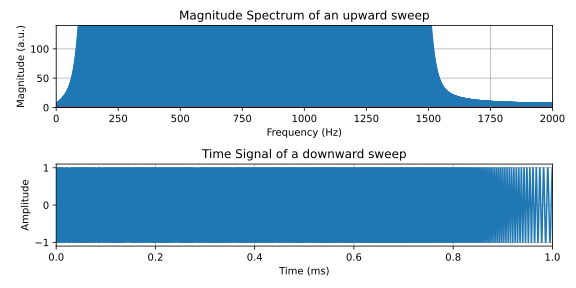

Pando consists of a vast root system with nearly 50,000 cloned stems, spread over an area of more than 40 hectares. Credit: George Rose/Getty https://www.nature.com/articles/d41586-024-03570-4
22051
Signals and Systems in Discrete Time
Lecture 10
Reframing: Cheese AND desert
Bastian Epp
What happened last week
- Systems can be unstable, stable, marginally stable
- Total response is superposition of zero-input and zero-state response
- Impulse response reflects modes of the system
Push - and hands-off!
\[ y(n) = a_1 y(n-1) + \dots + a_L y(n-L) = 0 \quad \forall \quad n \]- No input into system
- Only the characteristic modes "survive"
- Implication for impulse input \[ \delta(n) = \left\{ \begin{array}{lll} 1 & {\rm for} ~ n = 0 \\ 0 & {\rm else} \end{array} \right. \] $\Rightarrow$ Impulse response is composed of normal modes of system!
- Some terminology
- $\gamma_i \ $ Characteristic roots/values (eigenvalues)
- $\gamma_i^n \ $ Characteristic/natural nodes of system
Stable or not...
Let's push the pole...
...poles reflect EIGENMODES and determine stability....
What happens in session 10?
...let's dig deeper...
What is going to happen today
Time-frequency analysis
- A closer look on frequency analysis
- Short-time Fourier Analysis (STFT)
- Time-frequency representation of signals
- Interpretation of STFT as a filter bank
See supplementary material
The spectrum - always helpful?
From time to frequency
Pure tone
The spectrum - always helpful?
From time to frequency
Sweep upwards
The spectrum - always helpful?
From time to frequency
Sweep downwards

The spectrum - always helpful?
From time to frequency
Speech signal
The spectrogram - a bit of both
Time AND frequency
The spectrogram - a bit of both
Time AND frequency
Pure tone
The spectrogram - a bit of both
Time AND frequency
Sweep upwards

The spectrogram - a bit of both
Time AND frequency
Sweep downwards
The spectrogram - a bit of both
Time AND frequency
Speech signal

Quickie Nr #9
Take a few minutes to answer the following questions:
- What are the characteristics of Butterworth/Chebychev/Elliptic filters?
- What is a prerequisite of FIR filters to be linear phase?
- Explain how the overlap-add algorithm works.
- Why is a signal with a purely real-valued spectrum symmetric around t=0 in the time domain?
Butterworth filters are maximally flat in the passband, Chebychev I/II filters have ripples in the pass/stopband, Elliptic filters have ripples in both pass- and stopband. At given order, Butterworth filters have the shallowest, Chebychev filters the steepest transition band.
The impulse response needs to be symmetric around the temporal centre of the impulse response.
The signal is cut into small chunks (frames) and processed frame-by-frame. The resulting “tails” from previous frames are added to the subsequent frames.
A purely real spectrum corresponds to a signal in the time domain constructed as a sum of cosines - which are symmetric around t=0.
Detail of Valeriana site core, in the north-east corner of Block 2 (LIDAR image)
Auld-Thomas, L., Canuto, M. A., Morlet, A. V., Estrada-Belli, F., Chatelain, D., Matadamas, D., … Fernández Díaz, J. C. (2024). Running out of empty space: environmental lidar and the crowded ancient landscape of Campeche, Mexico. Antiquity, 98(401), 1340–1358.
doi:10.15184/aqy.2024.148